초음파비파괴검사기사(구) (2005-03-06 기출문제)
1과목: 초음파탐상시험원리
1. 다음 중 표면 바로 밑에 존재하는 미세한 불연속에 의한 에코와 탐상면에서 나오는 에코를 분리시킬수 있는 장비의 능력을 설명한 것으로 옳은 것은?
- 탐촉자에서 나오는 초기 펄스의 형상에 영향을 받는다.
- 검사할 시험체의 표면 거칠기와는 관계가 없다.
- 검사할 시험체의 두께와 큰 관계가 있다.
- 직경이 큰 탐촉자를 사용하면 결과가 양호하게 나타난다.
(정답률: 알수없음)

2. 초음파탐상시험시 주파수 선택에 고려할 점으로 잘못된것은?
- 감쇠가 클 경우에는 낮은 주파수가 좋다.
- 낮은 주파수 쪽이 분해능이 좋고 작은 결함의 검출에 적합하다.
- 주파수가 높은 쪽이 결함의 크기를 정하는데 정밀도가 높다.
- 주파수가 높은 쪽이 지향성이 좋다.
(정답률: 알수없음)
3. 다음 중 기본 공진주파수의 식은? (단, F는 공진주파수, V는 속도, T는 두께를 나타낸다.)
- F = V/T
- F = T/V
- F = V/2T
- F = VT
(정답률: 알수없음)
4. 오스테나이트계 스테인레스강 용접부의 초음파탐상시험에 대한 다음 설명중 올바른 것은?
- 종파 경사각탐촉자는 1회 반사법에서 시험체저면에서 모두 횡파로 모드 변환하므로 횡파만의 탐상이 된다.
- 종파 경사각탐촉자는 진동자가 종파용이므로 종파만 수신되므로 횡파는 무시하고 탐상한다.
- 종파 경사각탐촉자에서 발생하는 횡파를 무시하기 위해서는 수침법으로 탐상하는 것이 좋다.
- 종파 경사각탐촉자에서 종파에코와 횡파에코를 구별하기 위해 단면도를 작성하여 확인하는 것이 좋다.
(정답률: 알수없음)
5. 두께 25㎜의 강재용접부를 굴절각 70°로 탐상하여 결함깊이가 14㎜ 였다면 탐촉자에서 결함까지의 직선거리는?
- 38.46㎜
- 40.93㎜
- 45.23㎜
- 48.55㎜
(정답률: 알수없음)
6. 지름 12mm, 주파수 4MHz인 수직 탐촉자로 철강재를 검사할 때 근거리 음장은? (단, 철강재에서의 음속은 6000m/sec)
- 12.5mm
- 15.0mm
- 24.0mm
- 48.0mm
(정답률: 알수없음)
7. 초음파탐상에 관한 다음 설명 중 맞는 것은?
- 서로 접촉된 두 매질의 음향 임피던스차가 극히 크면 100% 반사를 한다고 할 수 있다.
- 서로 접촉된 두 매질의 음향 임피던스차가 극히 작으면 음압반사율은 1에 가깝다.
- 음압반사율이 커지면 음압의 왕복 통과율은 반비례적으로 작아진다.
- 에코의 높이는 음압의 제곱에 비례한다.
(정답률: 알수없음)
8. 초음파탐상시험시 깊이가 깊은 결함을 분해하려면 다음중 무엇에 가장 영향을 많이 받겠는가?
- 탐촉자의 직경
- 주파수
- 입사각
- 탐촉자의 초점거리
(정답률: 알수없음)
9. 초음파탐상시험에서 큰 결함영역의 크기를 측정하는 경우 옳은 설명은?
- dB drop법은 자동탐상에 이용하기 쉽다.
- dB drop법은 전달손실의 영향을 받기 쉽다.
- dB drop법은 감쇠의 영향을 받기 쉽다.
- dB drop법은 결함 에코높이의 영향을 받기 쉽다.
(정답률: 알수없음)
10. 초음파 탐상기의 탐촉자에서 탐촉자의 분해능은 다음 중 무엇에 비례하는가?
- 탐촉자의 직경
- 밴드 폭
- 펄스 반복율
- 불감대
(정답률: 알수없음)
11. 다음 중 초음파탐상시험시 접촉매질로 쓸 수 없는 것은?
- 물
- 고무
- 글리세린
- 고강력 접착제
(정답률: 알수없음)
12. 초음파탐상시험에서 초음파의 주파수가 높을수록 빔의 분산각은 어떻게 변화되는가? (단, 진동자의 직경은 동일)
- 감소한다.
- 변화하지 않는다.
- 증가한다.
- 일정하게 증가하다가 변화하지 않는다.
(정답률: 알수없음)
13. 음파의 진행 방향에 수직으로 입자의 진동을 갖는 파로서 종파속도의 1/2에 해당하는 파를 무엇이라 부르는가?
- 판파
- 횡파
- 표면파
- 레일리히파
(정답률: 알수없음)
14. 다음 중 내부의 크랙(Crack)과 같은 작은 결함에 높은 감도를 가지며, 검사속도가 빠르고 자동화할 수 있을 것으로 적당하다고 생각되는 비파괴검사법은?
- 방사선투과검사
- 초음파탐상검사
- 침투탐상검사
- 자분탐상검사
(정답률: 알수없음)
15. 초음파탐상시험에서 입사파의 종파 굴절각이 90°가 되는 경우 이 때의 입사각을 무엇이라 하는가?
- 입사각이 90°라는 의미와 상응한다.
- 제1임계각을 의미한다.
- 제1굴절각을 의미한다.
- 입사각과 반사각이 일치하지 않은 각도를 말한다.
(정답률: 알수없음)
16. 다음중 비파괴검사의 목적과 역할에 가장 부적절한 것은?
- 재료의 내부 구조 변화 가능
- 생산원가의 절감
- 재료 및 품질의 평가
- 생산 제품의 수명 연장
(정답률: 알수없음)
17. 다음 측정범위의 조정결과중 시험편 두께가 다른 것은?
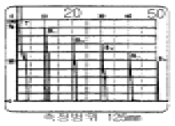
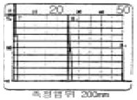
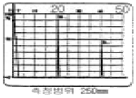
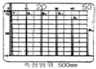
(정답률: 알수없음)
18. 다음 중 감쇠현상을 가장 크게 일으키는 주파수는?
- 0.5kHz
- 1.0MHz
- 15kHz
- 25MHz
(정답률: 알수없음)
19. 경사각 탐촉자를 사용할 때 매질1에서 매질2로 초음파가 입사할 때 입사각이 2차 임계각보다 크게 되면 매질2내에는 어떤 파가 존재하는가?
- 종파
- 횡파
- 종파와 횡파가 함께 존재
- 종파와 횡파 모두 존재 안함
(정답률: 알수없음)
20. 초음파탐상시험의 수직탐상에 대해 기술한 것으로 올바른 것은?
- 시험의 목적은 결함의 발생원인을 조사하는 것이고, 결함의 크기나 치수는 조사할 필요는 없다.
- 결함은 저면에코가 최대로 되었을 때 탐촉자의 위치바로 아래에 있다.
- 결함까지의 거리는 CRT상의 결함 에코의 크기로 알 수 있다.
- 탐상감도의 결정방법에는 시험편방식과 저면에코방식이 있다.
(정답률: 알수없음)
2과목: 초음파탐상검사
21. 경사각탐상에서 결함지시길이를 측정하는 경우에 대한 설명중 올바른 것은?
- 결함지시길이는 보통 0.1mm 단위로 측정한다.
- M 검출레벨에서는 H선으로 결함지시길이를 측정한다.
- M 검출레벨에서도 L선으로 결함지시길이를 측정한다.
- H 검출레벨에서도 H선으로 결함지시길이를 측정한다.
(정답률: 알수없음)
22. 다음 중 판재를 경사각 탐상할 때 불연속의 위치를 알아내기 위하여 알아야 되는 요소는?
- 판재의 두께와 탐촉자의 굴절각을 알아야 한다.
- 판재의 두께와 탐촉자의 웨지(Wedge)내 음향속도를 알아야 한다.
- 탐촉자의 웨지(Wedge)와 판재의 음향속도를 알아야 한다.
- 탐촉자의 입사각과 판재의 음향속도를 알아야 한다.
(정답률: 알수없음)
23. 물질 내부를 전파하는 음파의 속도는 다음 중 무엇에 기인 하는가?
- 주파수
- 파장
- 물질의 특성
- 진동 주기
(정답률: 알수없음)
24. 두께가 26㎜인 알루미늄판을 수침법으로 탐상하려할 때 이 때 물거리(Water path distance)가 최소 어느 정도되어야 알루미늄판의 표면에코와 제1저면에코 사이에 탐상에방해가 되는 에코가 나타나지 않는가? (단, 알루미늄에서의 종파속도는 6500m/sec 이고, 물속에서의 종파속도는 1500m/sec 이다.)
- 6㎜
- 13㎜
- 52㎜
- 113㎜
(정답률: 알수없음)
25. 그림은 경사각탐촉자를 사용하여 측정범위를 125㎜에 조정 하였을 때의 도중의 CRT상 도형을 나타낸 것이다. 순서가 올바른 것은?
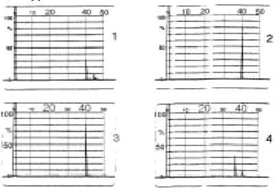
- ②→①→④→③
- ③→①→④→②
- ①→③→②→④
- ③→④→①→②
(정답률: 알수없음)
26. B Scan장비에 있는 Rate 발생기는 다음 중 어디에 직접 연결되는가?
- CRT 강도 회로
- 펄스발생기 회로
- RF 증폭회로
- 수평 소인회로
(정답률: 알수없음)
27. 자동 수침초음파탐상시험에서 주사속도는 무엇을 고려하여 결정되는가?
- 재질내에서의 초음파 전파속도
- 탐촉자 주파수
- 대비시험편에서 인공결함을 탐지할 수 있는 능력
- 피검체의 크기
(정답률: 알수없음)
28. 주파수에 대한 응답곡선이 그림과 같을 때 탐촉자의 대략적인 밴드 폭(band width)을 구하면?
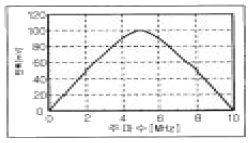
- 4MHz
- 6MHz
- 10MHz
- 12MHz
(정답률: 알수없음)
29. 초음파의 성질에 관한 용어중 초음파의 감쇠와는 무관한 것은?
- 흡수
- 산란
- 회절
- 반사
(정답률: 알수없음)
30. 배관의 원주용접부를 경사각탐상으로 0.5스킵 범위내에서 검사하였다. 다음 중 검출하기 어려운 결함은? (단, 배관 내면에서는 검사하기 어려운 경우)
- 기공
- 슬래그
- 용입부족
- 외면 언더컷
(정답률: 알수없음)
31. A-Scan 장비에서 스크린을 더 밝게 하려면 다음 중 무엇을 조정하여야 하는가?
- 펄스의 폭
- 펄스 반복주파수
- 소인지연 조정노브
- 진동수
(정답률: 알수없음)
32. 초음파탐상장치에서 스크린상에 결함에코 높이가 20%에 위치하고 저면에코 높이가 50%에 나타났다. 임상에코가 많아 리젝션(rejection)을 조정하니 저면에코 높이가 25% 로 조정되었다. 결함에코의 높이는?
- 결함에코가 나타나지 않는다.
- 10%
- 20%
- 25%
(정답률: 알수없음)
33. 일반적으로 경사각 탐촉자의 표시는 어떻게 하는가?
- 횡파가 발생했을 때의 반사각을 표시
- 종파가 발생했을 때의 굴절각을 표시
- 발생한 횡파의 굴절각을 표시
- 발생한 종파의 반사각을 표시
(정답률: 알수없음)
34. 초음파탐상시험시 횡파를 사용하는 목적으로 맞는 것은?
- 용접물 튜브 및 관의 불연속부를 검출
- 금속재료의 특성중 탄성효과를 검출
- 후판의 불연속중 적층(Lamination)의 유무를 확인
- 박판의 두께 측정
(정답률: 알수없음)
35. 시험체의 종류에 따라 가끔 탐촉자에 음향렌즈(Acoustic Lens)를 부착하여 사용한다. 그러나 이 렌즈는 검사원이 직접 제작하여 사용할 수 있기 때문에 렌즈의 재질을 선택하는데 있어서 상당한 주의를 필요로 한다. 이 렌즈가 갖추어야 할 재질의 특성이 아닌 것은?
- 내부 음향감쇠 효과가 적어야 한다.
- 제작이 용이해야 한다.
- 음향 임피던스가 물이나 압전물질의 경우와 비슷해야 한다.
- 물에서의 굴절 인덱스(Index)가 적어야 한다.
(정답률: 알수없음)
36. 다음 중 압연 철판의 적층(lamination)검사시 음파의 입사 면과 반대편 저면이 평행상태를 이루지 못할 경우 파생되는 효과로 생각되는 것은?
- 장비의 음극선관 화면에 저면반사를 얻지 못하는 경우가 생긴다.
- 입사면과 평행한 적층의 검출이 어려워진다.
- 초음파의 침투력이 증가한다.
- 초음파 침투력은 감소하나 분해능이 좋아진다.
(정답률: 알수없음)
37. 그림의 도형은 STB-A1에 있는 직경 1.5㎜의 관통구멍을 STB 굴절각 70도의 경사각탐촉자로 검출한 상황을 나타내고 있다. 이 때 얻어지는 탐상도형 중 올바른 것은?(단, 측정범위는 125㎜이고, 직경 1.5㎜ 관통구멍은 탐상면으로부터 깊이 15㎜ 위치에 있다.)
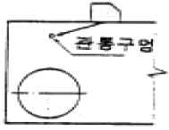
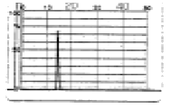
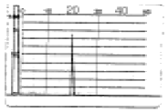
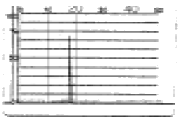
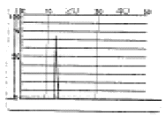
(정답률: 알수없음)
38. 거리진폭교정(DAC)이 필요한 것은 다음 중 어떤 현상에의해서 생기는 감쇠를 보상해 주기 위해서인가?
- 표면의 거칠기
- 탐촉자의 종류
- 탐상기의 특성
- 반사체의 거리
(정답률: 알수없음)
39. 그림과 같은 주강품의 검사시 탐상방향(방향 A, 방향 B)에 관계없이 제품 중앙에서 발생된 유사한 높이의 결함에코가 일정 길이(ℓ)만큼 존재하는 것을 알았다. 어떤 결함으로 추정되는가?
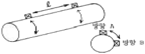
- 기포
- 균열
- 개재물
- 수축공
(정답률: 알수없음)
40. 초음파탐상시험에서 검출된 결함 판정시 요구되는 지식중 상대적으로 거리가 제일 먼 것은?
- 시험체 제조과정
- 초음파의 전파특성
- 금속재료학적 지식
- 탐촉자 구조 및 특성
(정답률: 알수없음)
3과목: 초음파탐상관련규격및컴퓨터활용
41. ASME Sec.V에 의한 초음파탐상시험에서 거리진폭특성곡선을 작성하여 검사를 수행하던 중 첫번째 거리진폭특성곡선을 확인한 결과 DAC상의 한 점이 시간축 값의 20%를 초과 하였다. 다음 중 어떤 조치가 필요한가?
- 본 교정에 사용된 장비와 연관된 모든 검사 데이타를 전부 무효로 해야 한다.
- 교정전 기록은 유효 처리하고, 새로 교정하여 검사를 계속 수행한다.
- 최종 유효교정까지의 시험결과는 인정하고 유효 교정이후 기록은 모두 확인.점검하고 수정한다.
- 본 교정에 사용된 장비와 연괸된 모든 결함기록을 확인, 점검하고 기록 확인된 수치를 수정한다.
(정답률: 알수없음)
42. KS B 0897에서 모재 두께가 30mm일 때 흠길이가 10mm이면 흠의 분류는? (단, B종일 때)
- 1류
- 2류
- 3류
- 4류
(정답률: 알수없음)
43. KS B 0896에 따라 모재 두께가 15mm인 맞대기용접부를 탐상한 결과 M검출 레벨에서 흠의 최대에코 높이가 제Ⅱ영역에 해당하고 흠의 길이는 20mm인 것이 1개 검출되었다. 이 용접부의 시험결과 분류는?
- 1 류
- 2 류
- 3 류
- 4 류
(정답률: 알수없음)
44. ASTM A-435는 어떤 종류의 재료에 대한 초음파탐상시험인가?
- 주조품
- 단조품
- 강판
- 용접부재
(정답률: 알수없음)
45. KS B 0817에서 규정된 탐상도형표시 기본기호의 설명 중 틀린 것은?
- T : 송신펄스
- F : 흠집에코
- B : 바닥면에코
- S : 측면에코
(정답률: 알수없음)
46. ASTM A-388의 규격을 적용할 수 있는 제품은?
- 단조강 - 봉 - 직경 3인치
- 주조니켈 - 판재 - 두께 4인치
- 용접연철 - 판재 - 두께 1인치
- 압연알루미늄 - 봉 - 직경 3인치
(정답률: 알수없음)
47. KS D 0040에 따라 판두께가 30mm인 시험체를 검사할 때 시험주파수 및 탐상 감도는? (단, 수직탐촉자 사용)
- 2MHz, STB-N1 : 25%
- 2MHz, STB-N1 : 40%
- 5MHz, STB-N1 : 50%
- 5MHz, STB-N1 : 70%
(정답률: 알수없음)
48. KS B 0817에 따라 두께 30mm의 강용접부에 대하여 펄스반사법에 의한 초음파탐상을 하고자 한다. 이 때 초음파탐상기의 시간축의 직선성은 풀 스케일의 몇 %이내이면 만족되는가?
- ±4.0%
- ±1.0%
- ±2.0%
- ±5.0%
(정답률: 알수없음)
49. ASME Sec.V, Art.5에 따라 튜브류를 초음파탐상검사시 사용하는 교정시험편의 교정 반사체(calibration reflect-ors)에 관한 사항이다. 틀린 것은?
- 형태는 노치(notch) 또는 흠(groove) 이다.
- 길이는 약 1인치 또는 그 이하이다.
- 폭은 1.6mm 이하이어야 한다.
- 깊이는 0.1mm 또는 공칭 살두께의 5%중 작은 쪽 이하여야 한다.
(정답률: 알수없음)
50. ASME Sec.V에 따라 용접부를 초음파탐상시험시 다음 중 평판의 기본교정시험편을 사용할 수 있는 시험체는?
- 직경 25인치인 재료
- 직경 19인치인 재료
- 직경 15인치인 재료
- 직경 10인치인 재료
(정답률: 알수없음)
51. KS D 0040에서 점적률이 7%일 때 등급은?
- A등급
- B등급
- X등급
- Y등급
(정답률: 알수없음)
52. KS B 0896에 따라 강용접부의 초음파탐상시험시 경사각 탐상의 에코높이 구분선 작성시 사용되는 시험편으로 올바른 것은?
- STB-A2 φ1x1mm
- STB-A2 φ2x2mm
- STB-A2 φ4x4mm
- STB-A2 φ8x8mm
(정답률: 알수없음)
53. ASME Sec.Ⅴ, Art.5에 따라 곡률이 20인치 이하인 시험대상물을 검사하기 위해 곡률이 10인치인 기본교정시험편을 제작하였다. 이것을 사용하여 검사할 수 있는 시험대상물의 곡률 반경 범위로 적합한 것은?
- 9인치 이상 12인치 미만의 곡률을 가진 것은 모두 검사 가능하다.
- 9인치 미만의 곡률을 가진 것은 모두 검사 가능하다.
- 15인치를 초과하는 곡률을 가진 것은 모두 검사 가능하다.
- 15인치를 초과하고 20인치 미만인 것은 모두 검사 가능하다.
(정답률: 알수없음)
54. KS B 0817에서 규정하는 초음파탐상기의 감도를 조정하는 방법은?
- 수직빔 및 경사각빔 방식
- 시험편 및 바닥면에코 방식
- 표준시험편 및 대비시험편 방식
- 접촉법 및 수침법 방식
(정답률: 알수없음)
55. KS D 0040에서 두께 50mm일 때 수직 1탐촉자법으로 탐상감도를 설정할 경우 STB-N1에서 에코높이를 몇 %에 맞추는가?
- 25%
- 50%
- 70%
- 규정하지 않음
(정답률: 알수없음)
56. 다음 중 정보의 형태와 정보통신 서비스가 잘못 연결된 것은?
- 영상 : TV방송
- 데이터 : 전자 우편
- 화상 : 파일 전송
- 음성 : 음성 원격 회의
(정답률: 알수없음)
57. ROM에 상주하는 마이크로컴퓨터 운영체제내의 작은 프로그램이며, 시스템이 시동될 때 실행되어 주기억장치를 검사하며, 시스템 디스크에 있는 부트(boot)라고 하는 운영체제의 일부분을 RAM에 적재하게 하는 것은?
- 모니터(monitor) 프로그램
- 부트스트랩(bootstrap)
- 마이크로 프로그램(micro program)
- 부트 프로그램(boot program)
(정답률: 알수없음)
58. 디스켓을 포맷할 때 포맷형식을 [시스템파일만 복사]로 선택하였을 때 복사되는 파일명은? (단, 숨겨진 파일 포함)
- COMMAND.COM
- MSDOS.SYS, IO.SYS
- MSDOS.SYS, IO.SYS, COMMAND.COM
- COMMAND.COM, AUTOEXEC.BAT, CONFIG.SYS
(정답률: 알수없음)
59. 다음 중 인터넷 검색엔진의 종류가 아닌 것은?
- Yahoo
- Galaxy
- 심마니
- MIME
(정답률: 알수없음)
60. 컴퓨터 바이러스에 감염되었을 때의 증상이 아닌 것은?
- 파일의 크기가 커진다.
- 엉뚱한 에러 메시지가 나온다.
- 프로그램의 실행이 되지 않는다
- 컴퓨터의 속도가 빨라진다.
(정답률: 알수없음)
4과목: 금속재료학
61. 열처리에서 질량효과라는 것은 무엇을 의미하는가?
- 재료의 크기에 따라 담금질효과가 다르게 나타나는 현상
- 시효처리의 일종으로서 재료가 크면 내부가 더 약한 현상
- 가열시간의 차이에 따라 시효경화가 다르게 나타나는 현상
- 뜨임현상의 일종으로서 뜨임시간이 길면 강도가 작아지는 현상
(정답률: 알수없음)
62. 다음 중 Muntz metal의 설명이 옳은 것은?
- 20 %의 Zn이 첨가된다.
- α+ β조직이다.
- 상온에서 전연성이 아주 높다.
- 내식성이 크므로 기계 부품에는 사용될 수 없다.
(정답률: 알수없음)
63. 활자 합금(type metal)의 주성분으로 맞는 것은?
- Pb - Sb - Sn
- Pu - Zn - As
- Bi - Aℓ- Zn
- Cu - Si - Zn
(정답률: 알수없음)
64. Cu를 4% 함유한 Aℓ합금을 고용체로 만든 다음 약 130℃로 유지시켰더니 시간의 경과에 따라 경도가 증가하는 것과 관계가 가장 깊은 것은?
- 가공경화
- 시효경화
- 고온경화
- 분산경화
(정답률: 알수없음)
65. 담금질시 균열이나 비틀림 방지 대책이 아닌 것은?
- 대상부품의 뾰족한 부분을 둥글게 한다.
- 급격한 단면형상을 갖도록 한다.
- 담금질 후 가능한 한 빨리 뜨임 처리하여 잔류응력을 제거한다.
- 필요이상의 고탄소강을 사용하지 않는다.
(정답률: 알수없음)
66. 18K 금은 Au 의 함유율이 몇 % 정도 인가?
- 60%
- 75%
- 85%
- 90%
(정답률: 알수없음)
67. 강도와 탄성을 요구하는 스프링강의 조직으로 가장 적당한 것은?
- Martensite
- Sorbite
- Ferrite
- Austenite
(정답률: 알수없음)
68. 청동합금에 탄성, 내마모성, 내식성 및 유동성 등을 향상시키기 위하여 첨가하는 원소는?
- Pb
- Zn
- P
- Aℓ
(정답률: 알수없음)
69. KS재료기호 중 SS400의 KS규격상 명칭은?
- 합금공구강40종
- 일반구조용 압연강재
- 열간압연 스테인리스 강판 및 강대
- 기계구조용 스테인리스 강재
(정답률: 알수없음)
70. Al-Cu계 합금에 Si을 첨가하여 유동성이 좋으며, 피삭성, 용접성, 내기밀성이 양호하고 열처리가 가능한 합금은?
- 인코넬
- 라우탈
- 크로멜
- 퍼인바
(정답률: 알수없음)
71. 가단 주철은 열처리 하기 전의 주조상태에서 어떠한 주철상태가 바람직한가?
- 백주철 (white cast iron)
- 회주철 (grey cast iron)
- 반주철 (mottled cast iron)
- 펄라이트 주철 (pearlite cast iron)
(정답률: 알수없음)
72. 탄소강에서 Cementite(Fe3C)란?
- 철에 탄소가 고용된 고용체
- 철과 탄소의 금속간 화합물
- 철과 탄소가 합금되어 단상을 이룬 상태
- 선철에서만 존재하는 고용체
(정답률: 알수없음)
73. 황동(brass)의 설명이 틀린 것은?
- Cu와 Zn으로 된 황색 합금이다.
- 실용적으로는 대략 Zn이 약 30-40% 정도이다.
- Cu와 Sb의 합금을 말한다.
- 주조성, 가공성, 기계적 성질이 좋다.
(정답률: 알수없음)
74. 0.3% 탄소강의 723℃ 선상에서의 초석 α 의 량은 약 몇% 정도 되는가? (공석강의 탄소함량은 0.8% 임)
- 63%
- 79%
- 84%
- 89%
(정답률: 알수없음)
75. 알루미늄 합금 중 개량처리(modification)의 효과를 가장 기대하는 합금계(실루민)는?
- Aℓ- Co계
- Aℓ- Si계
- Aℓ- Sn계
- Aℓ- Zn계
(정답률: 알수없음)
76. 보통주철의 재질에 대한 설명 중 틀린 것은?
- 보통주철은 성분범위가 C 2.5-4.0%, Si 0.5-3.5%, Mn 0.2-1.0%, P 0.03-0.8%, S 0.01-0.12%이다.
- C는 응고할 때 공정조직의 한 구성 요소인 편상 흑연(flake carbon)을 정출한다.
- C, Si 양이 낮을수록 공정량은 많아지고 주조성은 좋아진다.
- 보통 주철은 냉각속도가 빠를수록 Fe3C 를 정출한다.
(정답률: 알수없음)
77. 경도시험에서 나타내는 약어 표기가 틀린 것은?
- 비커즈 경도:HV
- 쇼어 경도:HS
- 브리넬 경도:HB
- 로크웰 경도:HL
(정답률: 알수없음)
78. 강철에 포함된 Mn의 영향이 아닌 것은?
- 유동성 증가
- 담금성 양호
- 고온가공 용이
- 경도, 강도 감소
(정답률: 알수없음)
79. 강의 표면경화 열처리에서 고체 침탄 촉진제로서 가장 많이 사용되는 것은?
- KCN
- KCl
- NaCl
- BaCO3
(정답률: 알수없음)
80. 상업화에 활용되고 있는 FRM(섬유강화금속)에 사용되는 섬유의 종류가 아닌 것은?
- B
- SiC
- C
- Cr2O3
(정답률: 알수없음)
5과목: 용접일반
81. 다음 중 습기가 있는 용접봉을 사용할 경우 해로운 점 설명과 가장 관계가 적은 것은?
- 피복이 떨어지기 쉽고, 아크가 불안정하다.
- 용착금속의 기계적 성질이 나빠진다.
- 기공이나 균열의 원인이 된다.
- 용접기를 손상시킨다.
(정답률: 알수없음)
82. 다음 용접 중 구리합금의 용접에 가장 적합한 것은?
- 산소 아세틸렌 용접
- 불활성가스 아크용접
- 일렉트로 슬래그용접
- 서브머지드 아크용접
(정답률: 알수없음)
83. 연강용 피복 아크용접봉 중 내균열성이 가장 좋은 것은?
- 고셀룰로스계
- 티탄계
- 일미나이트계
- 저수소계
(정답률: 알수없음)
84. 아세틸렌 용기의 안전장치에 대한 설명으로 가장 적합한 것은 ?
- 질소를 가스 안정제로 주입하여 가스의 내부 폭발을 방지한다.
- 용기 상부 또는 하부에 가용 플러그를 장치하여 용기 내의 온도 상승시 녹아 터지도록 한다.
- 다공성 물질과 아세톤에서 모든 위험을 자연적으로 흡수하도록 고안되어 있다.
- 스프링식 안전 밸브가 부착되어 용기압이 올라가면 자동 방출하도록 되어있다.
(정답률: 알수없음)
85. 전기저항 점(Spot)용접의 전극(Electrode)재료에 대한 설명으로 틀린 것은?
- 피용접재와 합금되기 어려울 것
- 전기 전도도가 높을 것
- 열전도율이 낮을 것
- 기계적 강도가 클 것
(정답률: 알수없음)
86. 동 용접이 철강용접에 비해서 어려운 이유가 아닌 것은?
- 열전도율이 낮고 냉각속도가 크다.
- 산화동을 포함한 부분이 순동보다 먼저 용융하여 균열을 일으키기 쉽다.
- 동은 용융 시 산화가 심하며 가스 흡수로 용접부에 기공이 생기는 경우가 많다.
- 수소와 같은 확산이 큰 가스를 석출하며 그 압력으로 약점을 형성한다.
(정답률: 알수없음)
87. 모재는 전혀 녹이지 않고, 모재보다 용융점이 낮은 금속을 녹여 표면장력(원자간의 확산 침투)으로 접합하는 것을 의미하는 용어는?
- 융접(fusion welding)
- 압접(pressure welding)
- 납땜(brazing and soldering)
- 저항용접(resistance welding)
(정답률: 알수없음)
88. 다음 용접 중 TIG 용접에서 모재에 열이 가장 많이 발생하는 가스와 극성은 ?
- Ar가스, DCRP 용접
- He가스, DCSP 용접
- Ar가스, DCSP 용접
- He가스, DCRP 용접
(정답률: 알수없음)
89. 납땜시 사용되는 용제(Flux)의 역할로 잘못 설명한 것은?
- 용접중 발생하는 산화물 제거
- 용접부의 인성을 증가
- 용가재의 유동성을 향상
- 모재 표면의 산화 방지
(정답률: 알수없음)
90. 미그(MIG)용접의 장점 설명으로 틀린 것은?
- 수동 아크용접에 비해 용착율이 높다.
- 박판 용접에는 적합하지 않다.
- 티그 용접에 비해 용융속도가 빠르다.
- 탄산가스 아크용접에 비해 스패터 발생이 많다.
(정답률: 알수없음)
91. 피복금속 아크용접에서 아크가 용접의 단위 길이(1㎝)당 발생하는 전기적 에너지 H(Joule/cm)는? ( 아크 전압은 E Volt, 아크전류를 I 암페어, 용접속도는 V ㎝/min 라 한다.)
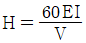
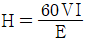
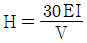
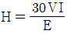
(정답률: 알수없음)
92. 용접부의 기공 발생 방지책 설명으로 틀린 것은 ?
- 위빙을 하여 열량을 늘리거나 예열을 한다.
- 충분히 건조한 저수소계 용접봉으로 바꾼다.
- 이음 표면을 깨끗하게 하고 적당한 전류로 조절한다.
- 용접속도를 빠르게 조절한 후 용접부를 급냉한다.
(정답률: 알수없음)
93. 피복금속 아크용접봉 E4316은 어떤 계통의 용접봉인가 ?
- 저수소계
- 철분수소계
- 철분 산화철계
- 고산화 티탄계
(정답률: 알수없음)
94. 탄산가스 아크 용접에 관한 다음 사항 중 틀린 것은?
- 이음가공에서의 이음 각도공차는 ±5°이내로 하는 것이 좋다.
- 아크 종점에서는 용입이 얕으므로 아크를 신속하게 정지시켜 크레이터의 발생을 막는다.
- 고장력강이나 합금강의 가접은 반드시 저수소계 용접봉을 사용하도록 한다.
- 2차 무부하 전압이 60V 정도인 경우, 콘택트 팁에 와이어가 용착하기 쉽다.
(정답률: 알수없음)
95. 피복 금속 아크 용접봉에 도포(塗布)되는 용제(Flux)의 기능(機能) 설명으로 틀린 것은?
- 특별한 자세(姿勢)의 용접을 쉽게 한다.
- 아크(arc)의 발생, 안전 및 유지를 용이하게 한다.
- 가스를 발생시켜서 대기(大氣)의 침입을 방지한다.
- 적당한 아크 전압과 용융점이 높은 슬랙을 만든다.
(정답률: 알수없음)
96. 논 가스 아크용접의 장ㆍ단점 설명으로 틀린 것은?
- 전자세 용접이 가능하다.
- 보호가스나 용제의 공급이 필요하다.
- 용접 전원으로 교ㆍ직류를 모두 사용할 수 있다.
- 용접 길이가 긴 용접물은 아크를 중단하지 않고 연속용접을 할 수 있다.
(정답률: 알수없음)
97. 용접시 발생하는 결함인 균열(crack)을 억제하기 위한 방법이 아닌 것은?
- 예열을 한다
- 후열을 한다
- 용접전류를 높인다
- 피닝을 한다
(정답률: 알수없음)
98. 150㎏f/cm2 의 압력으로 대기압하에는 6,000ℓ가 충전된 산소를 압력이 100㎏f/cm2 될 때까지 사용하였다면 산소 사용량은?
- 1200ℓ
- 1500ℓ
- 1800ℓ
- 2000ℓ
(정답률: 알수없음)
99. 교류아크 용접기의 1차측 입력이 20[kVA]인 경우 가장 적합한 퓨즈의 용량은? (단, 이 용접기의 전원전압은 200V이다.)
- 100[A]
- 120[A]
- 150[A]
- 200[A]
(정답률: 알수없음)
100. 용접후 용접변형을 교정하기 위한 방법이 아닌 것은?
- 피닝법
- 역변형법
- 얇은 판에 대한 점 수축법
- 후판에 대한 가열후 압력을 주어 수냉하는 법
(정답률: 알수없음)